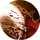

Волна Гнева
Открыть в интерактивной вики →
Описание
Вид тучи врагов не пугает Варвара. Ужасающий в гневе, он делает мощный взмах оружием и набрасывается на всех разом. Таким образом, у него появляется шанс задеть каждого из вражеской команды.
Тип: ближняя массовая атака
Формула: 0.7 * сила + 0.3 * ловкость + оружие
выбрано холодное оружие
Тип: ближняя массовая атака
Формула: 0.7 * сила + 0.3 * ловкость + оружие
выбрано холодное оружие
Уровни навыка
| Уровень навыка | Требуемый уровень | Урон | Шанс попадания | Выносливость |
|---|---|---|---|---|
| I | 23 | 95% | +3% | 36 |
| II | 24 | 105% | +3% | 40 |
| III | 25 | 116% | +3% | 43 |
| IV | 26 | 126% | +4% | 47 |
| V | 27 | 137% | +4% | 50 |
| VI | 28 | 147% | +4% | 54 |
| VII | 29 | 158% | +5% | 58 |
| I | 30 | 168% | +5% | 63 |
| II | 31 | 179% | +5% | 68 |
| III | 32 | 189% | +5% | 74 |
| IV | 33 | 200% | +6% | 79 |
| V | 34 | 210% | +6% | 85 |
| VI | 35 | 221% | +6% | 90 |
| VII | 36 | 231% | +7% | 95 |
| I | 37 | 242% | +7% | 103 |
| II | 38 | 252% | +7% | 110 |
| III | 39 | 263% | +8% | 117 |
| IV | 40 | 273% | +8% | 124 |
| V | 41 | 284% | +8% | 131 |
| VI | 42 | 294% | +8% | 139 |
| VII | 43 | 305% | +9% | 146 |